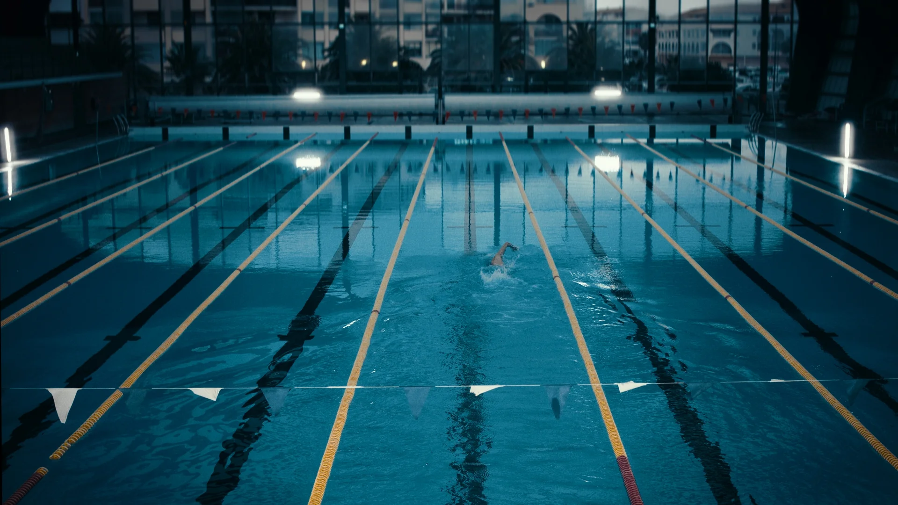
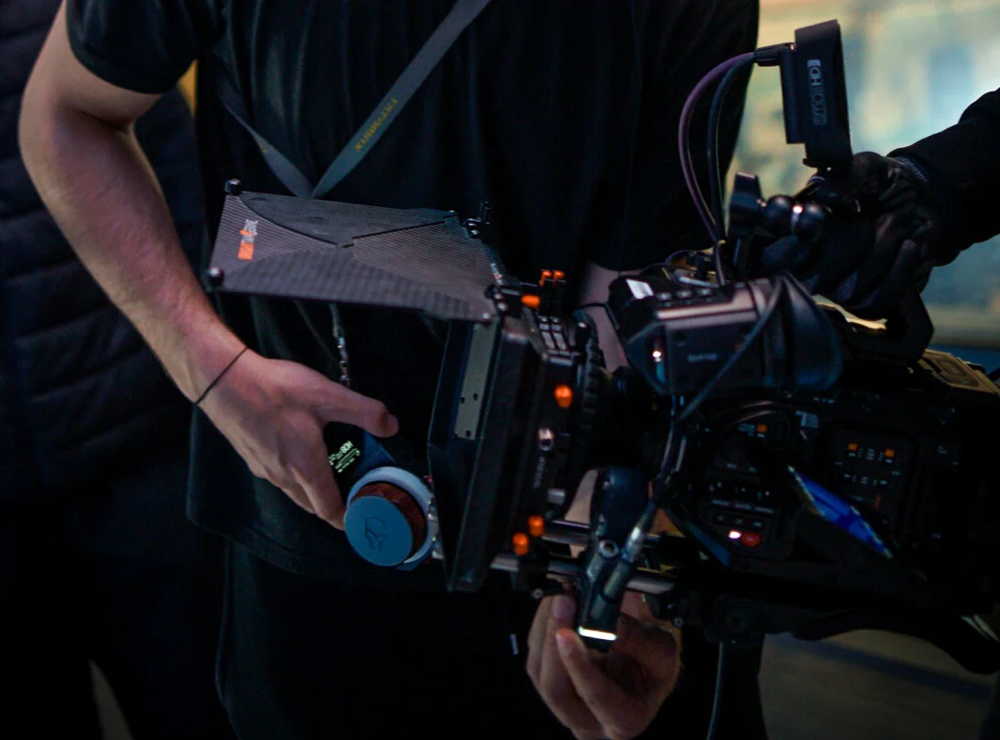
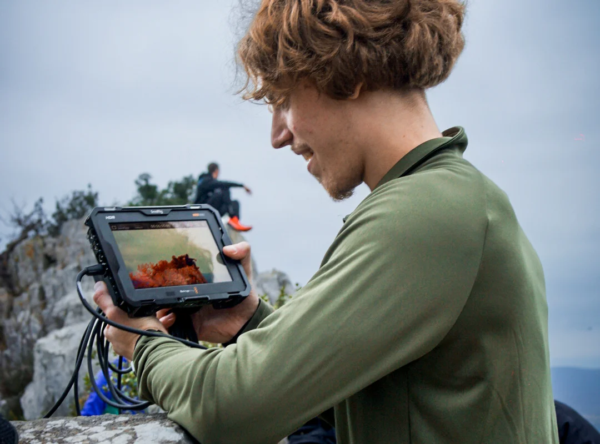
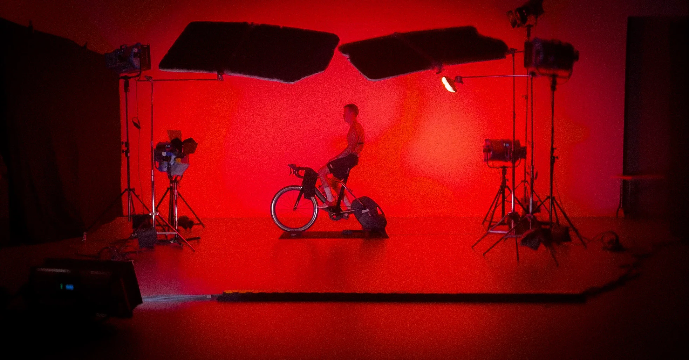
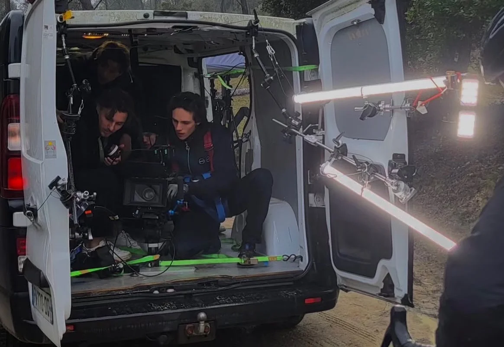
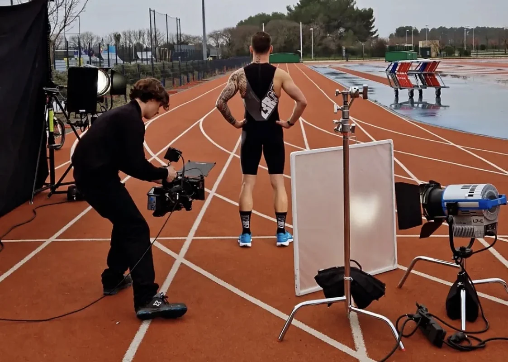
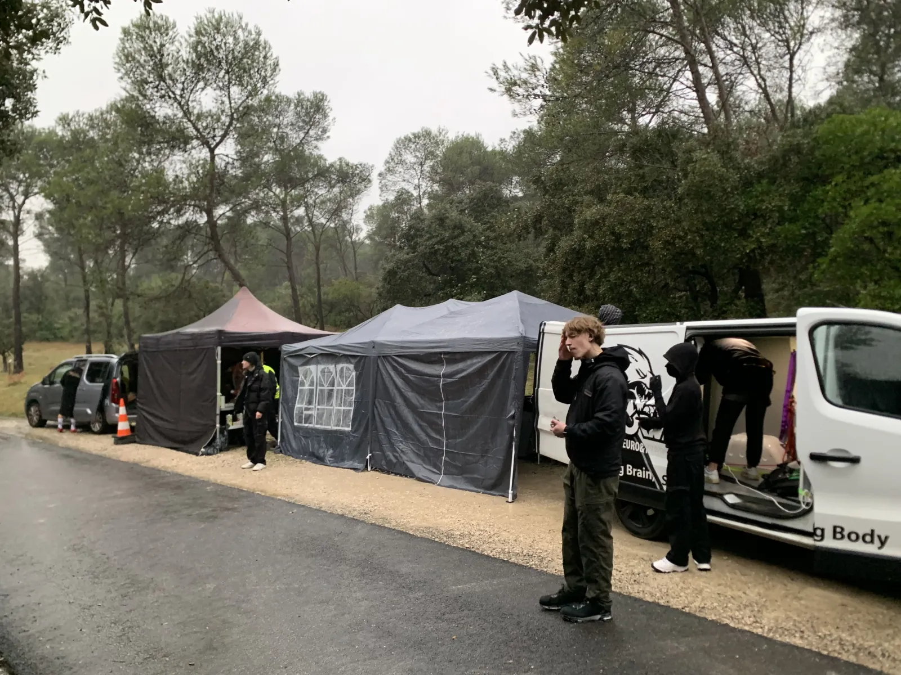

Z3ROD - Triathlon
Making Of






Équipe Technique
À propos du projet
Z3ROD, c'est une marque de triathlon française reconnue à l'international. Leur univers : la performance, l'endurance, une certaine élégance dans l'effort. On les a approchés directement. La collaboration s'est construite naturellement. Trois jours de tournage, route bloquée, piscine olympique privatisée, 14 techniciens. Un film publicitaire de 30 secondes. Chaque seconde compte.
Z3ROD : du brief au résultat
01 : Objectif
Incarner l'univers Z3ROD dans 30 secondes : performance, endurance, élégance sportive. Pour leur communauté d'athlètes et leurs partenaires retail.
02 : Contrainte
Tournage en extérieur/intérieur studio sur 3 jours avec un athlète professionnel. Coordination étroite entre les créneaux sportifs, la météo et la logistique d'une équipe technique complète. Blocage de la circulation sur une route pour les besoins du tournage. privatisation partielle d'une piscine olympique.
03 : Choix Créatifs
Plans rapprochés sur les textures et les gestes techniques. Caméra portée sans stabilisation pour rendre l'effort organique. Étalonnage naturel pour ne pas trahir l'énergie de la marque. Montage dynamique, musique originale composée pour le film.
04 : Dispositif Technique
- Durée : 3 jours de tournage
- Équipe : 14 techniciens
- Matériel : Caméra Ursa Mini Pro 4.6K G2, optiques cinéma Leica R, slider, éclairage LED Arri
- Post-production : Montage, étalonnage avancé, composition musique originale, sound design, motion design
05 : Livrables
- 1 film publicitaire principal (30 secondes)
- Déclinaisons multi-formats (16:9, 9:16, 1:1)
- Fichiers master en 4K pour diffusion broadcast
📈 Impact & Résultats
Le film a renforcé l'image de Z3ROD auprès de sa communauté et de ses distributeurs. Déployé en campagne digitale et sur les salons professionnels, il ancre la marque dans l'univers du sport haut de gamme. Un film qui dure.
Une marque triathlon qui voulait montrer le geste, pas le produit
Z3ROD est une marque française de matériel triathlon. Combinaisons néoprène, vêtements de cyclisme, accessoires. Sur ce marché, la communication standard tourne autour de deux pôles : le produit en gros plan (couture, technicité, matériaux), ou l'athlète professionnel sponsorisé en pleine performance. Z3ROD voulait sortir de ce cadre.
Le brief : un film qui parle du triathlon comme expérience, pas comme produit. Un triathlète professionnel, des routes aux alentours de Montpellier, l'effort, le ciel gris qui rappelle la dureté de ce qu'on traverse. Que la marque soit présente sans être affichée. Que le spectateur ait envie de repousser ses limites, pas d'acheter un objet.
Capter l'effort en mouvement sans tomber dans la vidéo sportive de stock
Le triathlon en image, c'est devenu un genre saturé. Drone qui suit le coureur sur une route déserte, ralenti sur la transpiration, voice-over motivationnel. Pour Z3ROD, on devait éviter le piège du film générique tout en gardant la dimension sportive du sujet.
Défi technique : filmer un athlète en mouvement à 35-40 km/h sur route bloquée, avec une sensation de vitesse réelle et des images stables. Solution retenue : un utilitaire avec l'opérateur installé dans la soute, trépied posé à même le sol et sanglé, opérateur et assistant opérateur tous deux équipés d'un harnais. Le réalisateur prenait place en cabine conducteur avec un retour visuel en direct sur l'image filmée.
Un dispositif mobile, une caméra Black Magic, un athlète à l'effort
Setup retenu : utilitaire comme véhicule suiveur, caméra Black Magic dans la soute sur trépied sanglé, opérateur et assistant opérateur avec harnais. L'athlète, intégralement équipé en Z3ROD, avait une liberté de jeu dans le cadre : on lui demandait de rouler à son rythme, mais le tournage restait chorégraphié : il y avait des moments précis où il fallait une connexion entre le cadre et l'athlète, entre le regard et la caméra.
Étalonnage désaturé, à dominante mate et brumeuse, pour coller à l'atmosphère du ciel gris et à la dureté de l'effort. La correction colorimétrique a été travaillée avec précision pour que la tenue reproduise exactement la couleur du produit, sans déformation sur les teintes de la marque. Peu de plans serrés sur les détails : on privilégie l'athlète dans son ensemble, son effort lisible sur le visage, un éclairage doux apporté en mouvement. Beaucoup de mouvements de caméra bruts pour rendre le dynamisme et la charge physique : très peu de plans stabilisés.
Trois jours de tournage, quatre décors, un athlète
3 jours de tournage sur 4 décors distincts : une route bloquée pour la circulation, un studio cinéma pour travailler dans un espace maîtrisé et créer une lumière artificielle forte (lumière rouge de l'effort), une piste d'athlétisme privatisée, et une piscine olympique partiellement privatisée.
Matériel transporté dans l'utilitaire : caméra principale, optiques cinéma vintage, batteries de rechange, kit son pour les ambiances et les bruitages. Pas de drone, pas de plan aérien. Plusieurs régisseurs pour coordonner les décors, les autorisations et la logistique. L'athlète a reçu des briefings en amont du tournage puis à chaque journée, pour caler les intentions et les passages clés.
Un film de 30 secondes, des déclinaisons verticales, des photos plateau
Livrable principal : film commercial de 30 secondes, format 16/9, livré en 4K et en HD. Des déclinaisons en format vertical ont été réalisées sur certains plans pour les usages sur les réseaux sociaux. Un photographe plateau était présent sur le tournage pour produire des photos à destination de la marque et de HUMAN REC.
Le film est utilisé dans les salons pour présenter la marque, ainsi que pour d'autres usages définis par Z3ROD.
Un projet similaire en tête ? Une marque sport, un produit technique, un univers d'effort à filmer ? Parlons-en en 15 minutes.


Vous souhaitez un film similaire ?
Dites-nous ce que vous voulez construire. On vous dit comment on peut le faire.
Parlons-en